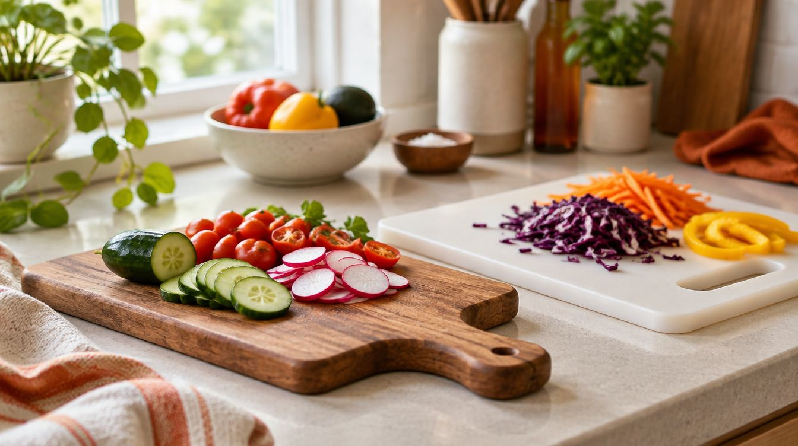
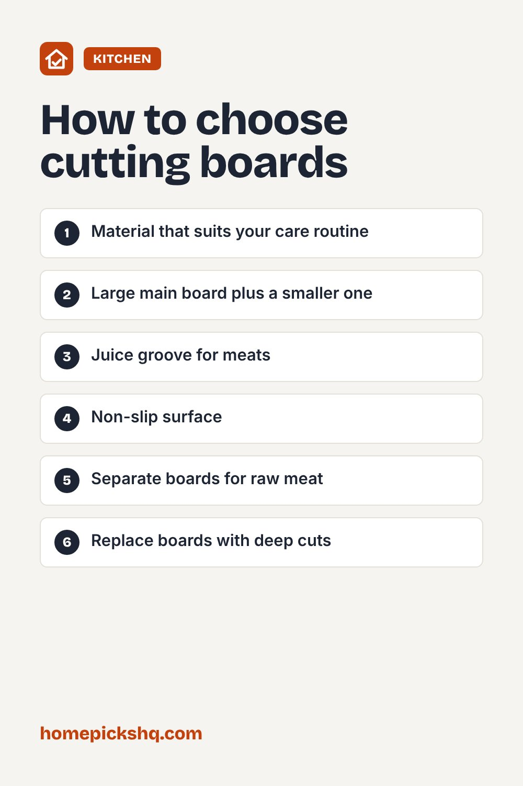

Best Cutting Boards: Wood, Plastic, Bamboo, and More

How we write these guides: we research manufacturer specifications, expert guidance, and owner feedback. We do not claim to have lab-tested every product. Links to Amazon on this page are affiliate links; see our disclosure.
A good cutting board protects your knives and your countertop and makes prep faster and safer. The right material depends on what you cut and how much maintenance you are willing to do. Here is how the main options compare.
Browse cutting boards on Amazon
Wood
Wood boards, such as maple, walnut, and cherry, are gentle on knife edges and look great. End-grain boards are the most knife-friendly and self-healing but cost more. Wood needs hand washing and occasional oiling with food-grade mineral oil to prevent drying and cracking.
Bamboo
Bamboo is technically a grass and is harder than most woods, which can dull knives a little faster. It is affordable and sustainable. Like wood, it should be hand washed.
Plastic
Plastic boards, usually high-density polyethylene, are inexpensive, lightweight, and often dishwasher safe. They are a practical choice for raw meat and poultry. Replace them when they develop deep grooves that are difficult to clean.
Composite and rubber
Composite boards made from wood fiber and resin are durable and dishwasher safe. Rubber boards are gentle on knives and stay put on the counter, though they are often pricier.
What to avoid
Glass, marble, and stone boards are hard on knives and can dull them quickly. They can also be slippery.
Size and features
A main board of about 15 by 20 inches gives enough room for most tasks. Juice grooves catch liquids from meats and fruit. Non-slip feet or a damp towel underneath keeps the board from sliding.
Food safety
Use separate boards for raw meat and for produce or ready-to-eat foods to reduce cross-contamination. Wash boards with hot soapy water after each use, and sanitize plastic boards as needed.
Quick buying checklist
- Material that suits your care routine
- Large main board plus a smaller one
- Juice groove for meats
- Non-slip surface
- Separate boards for raw meat
- Replace boards with deep cuts
See cutting boards on AmazonUse the checklist above to compare options. As an Amazon Associate I earn from qualifying purchases.

Frequently asked questions
Is wood safe for raw chicken?
Wood can be used if it is cleaned well, but many cooks prefer plastic for raw meat because it can go in the dishwasher.
How do I oil a wooden board?
Wipe on food-grade mineral oil, let it soak in, and wipe off the excess.
How often should I replace a cutting board?
When it has deep grooves, cracks, or smells that persist after washing.